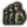

National focus模组制作
原页面：National focus modding
National focus trees are defined within /Hearts of Iron IV/common/national_focus/*.txt files. Like most other files, the filename is irrelevant and isn't used for anything other than organisation. One file can store more than one focus tree or none at all.
国策树
A focus tree is defined by using a focus_tree = { ... } block. The following arguments are used:
id = my_focus_tree decides the ID that the focus tree uses. It is mandatory to define, and an overlap will result in an error. The ID is primarily used for the has_focus_tree trigger and the load_focus_tree effect, whose tooltips use it as a localization key.
country = { ... } is a MTTH block that assigns a score for the focus tree, deciding which one is used in-game. This is evaluated before the game's start and the check is essentially never refreshed[a]. The focus tree with the highest score will be the one that gets loaded for the country. By default, the score starts with 1. A typical usage looks like this:
country = {
factor = 0
modifier = {
add = 20
original_tag = TRA
}
} In this case, countries originating from  特兰西瓦尼亚 (i.e. the country itself and any civil war or collaboration government breakaways, as ensured by the original_tag trigger) will have the score of 20, while every other country will have the score of 0. Assuming that there is no other focus tree where
特兰西瓦尼亚 (i.e. the country itself and any civil war or collaboration government breakaways, as ensured by the original_tag trigger) will have the score of 20, while every other country will have the score of 0. Assuming that there is no other focus tree where  特兰西瓦尼亚 has a higher country score, this will ensure that this focus tree gets loaded for it.
特兰西瓦尼亚 has a higher country score, this will ensure that this focus tree gets loaded for it.
default = yes sets the focus tree to be marked as default. In total, there should be one total default focus tree, no more, no less. A focus tree being marked as default means that if every other focus tree has a country score of 0, this tree will be chosen instead. Additionally, a country starting with a focus tree will fail to appear in the "minor countries" section within the "interesting countries" menu before the game's start. If this is left out from a focus tree, it gets assumed to be non-default.
reset_on_civilwar = no is not determined on its effect. Instead, this is how focus trees are handled in civil wars, regardless of if reset_on_civilwar is set or how it's set:
When a civil war starts, the original country will always continue using the focus tree. The focus it's doing will not be paused or cancelled by the civil war itself. The revolter will have the focus tree it's using evaluated when the civil war starts, assigning one depending on each tree's country = { ... } value. If the same focus tree gets used for the revolting country as the one that the original country used when the civil war started, every focus that the original country has completed will get completed for the revolting country, including setting the same focus progress for the one that's being completed by the original country at the moment. Otherwise, the focus progress will get lost.
shared_focus = TAG_focusname will set the focus tree to include the specified shared focus and every focus that is connected to it via prerequisites. Setting this to a non-existing focus causes a game crash when loading into the main menu.
continuous_focus_position = { x = 1200 y = 100 } is the position of the top left corner of the continuous focus menu in pixels. For comparison, by default[b], the continuous focus palette has the position of 50 on the X axis and 1000 on the Y axis. If both x and y are set to 0 or the position is undefined for the tree, it resets to the default position.
initial_show_position = { ... } decides the initial position of the camera when the focus tree is first opened. There are 2 ways to arrange it:
focus = TAG_focusnamewill make the camera centre on the specified focus in particular. It'll be in the top centre of the screen exactly, taking offsets into consideration.x = 12 y = 0decides the exact position of the top-centre of the camera. This uses the same coordinate system as regular focuses do, by default a unit of x being equal to 96 pixels and a unit of y being equal to 130 pixels[c]
- This also accepts
offset = { ... }, adding the specified values to respective positions if the conditions within thetrigger = { ... }trigger block are met for the country. For example, this will apply the modifier and result in a position of x = 13, y = 1 if the country is BHR:
initial_show_position = {
x = 17
y = 0
offset = {
x = -4
y = 1
trigger = {
tag = BHR
}
}
}
focus = { ... } are the focuses themselves. Each focus that's put within the focus tree will. The focuses have to be within a focus_tree = { ... } in order to let the game know which focus tree exactly to assign them to. If a focus = { ... } blocks ends up outside of a focus_tree = { ... } or within another focus = { ... }, this gets marked within the error log as "focus" being an unexpected token, fixed by adjusting brackets as needed.
示例
Pure minimum, with 2 focuses:
| The text in this section has been collapsed by default. |
|---|
focus_tree = {
id = BHR_focus_tree
country = {
base = 0
modifier = {
add = 10
tag = BHR
}
}
focus = {
...
}
focus = {
...
}
}
|
Average tree, with 2 focuses:
| The text in this section has been collapsed by default. |
|---|
focus_tree = {
id = OMA_focus_tree
country = {
base = 0
modifier = {
tag = 25
original_tag = OMA
}
}
continuous_focus_position = { x = 450 y = 800 }
initial_show_position = { focus = OMA_focus_name }
focus = {
id = OMA_focus_name
...
}
focus = {
...
}
}
|
Shortcuts
Shortcuts are used to add navigation buttons in the lower left corner that, when clicked, will move the camera to a specific focus.
Parameters:
name = lockey, the localized name that will be displayed on the button.target = focus_id, focus where the camera should be moved.scroll_wheel_factor = <float>, zoom, the higher the value the greater the zoom. (between 0 and 1)trigger = { ... }, a trigger block specifying whether the shortcut button should be visible, optional. (If true, it will not supersede allow conditions of target focus.)
An example shortcut definition is as such:
shortcut = {
name = GER_oppose_hitler_shortcut
target = GER_oppose_hitler_ww
scroll_wheel_factor = 0.485
trigger = {
has_dlc = "Gotterdammerung"
}
}
Inlay window
Focus inlay windows are generic inlay components that can be added to the focus tree, similar to the continuous focus window, a scripted GUI object.
Definition
Definitions for inlay windows are located in /Hearts of Iron IV/common/focus_inlay_windows/*.txt.
For a guide written by the game developers, see Dev dairy modding
Parameters:
window_name = gui_component_namethe name of the scripting GUI to use.internal = <bool>if true, then the inlay window is only visible to the country itself. (defaults no)visible = { ... }whether the inlay window should be visible, when not visible, no evaluations will be done.scripted_buttons = { ... }应当拥有动态 sprite 的图像列表。<button_name> = { ... }按钮的名称。available={ ... }List of triggers when the button is allowed to be pressed.click_effect={ ... }List of effects the button will have upon being pressed.
scripted_images = { ... }应当拥有动态 sprite 的图像列表。<icon_name> = { ... }图标的名称（必须是 "gui_component_name" 的子组件）。该图标可能使用的 gfx 列表，第一个求值为真的将被选中。<gfx_name> = { ... }/yesIf a trigger is provided, then it will be evaluated with the country scope of the focus tree. If "yes" is set, then it will always be used. Note: "yes" is commonly the last entry in the list that acts as a default case.
An example for inlay window definition:
inlay_window_id = {
window_name = gui_component_name
internal = yes
visible = {
visibility_triggers
}
scripted_buttons = {
my_button = {
available = {
triggers
}
click_effect = {
add_political_power=5
}
}
scripted_images = {
advisor_portrait = {
gfx_name = {
has_completed_focus = TAG_focus_name_example
}
gfx_name_fallback = yes
}
}
}
Declaration
Inlay window must be declared in focus tree. Any number of inlay windows can be defined for focus tree.
Parameters:
id = inlay_window_idinlay window identifier.position = { x = <int> y = <int> }position on the tree, same syntax and scale as continuous focus position.
An example declaration of inlay window is as such:
inlay_window = {
id = ger_inner_circle_inlay_window
position = { x = 4500 y = 1150 }
}
国策
The ID for the focus is defined using id = TAG_focusname. While it's optional to preface the focus' ID with the country's tag, doing so is preferred to avoid overlapping focus IDs from different focus trees. Having the same focus ID in different focus trees leads to errors, such as broken prerequisite lines and effects or triggers such as complete_national_focus or has_completed_focus not working correctly. Instead, it could be possible to use shared focuses to put the same focus in different focus trees.
Name and description
The name of the focus depending on the language that's turned on is defined within /Hearts of Iron IV/localisation/, using the ID of the focus as the localisation key. For English in particular, this is defined within any /Hearts of Iron IV/localisation/english/*_l_english.yml file with the UTF-8-BOM encoding. It is preferable to use new localisation files when possible rather than overwriting base game localisation in order to not have to change that for compatibility with recent versions, and to do so, the file should have a new name that doesn't exist in base game, but it must still end with _l_english.yml to be loaded properly. The focus' ID is used as the localisation key used to establish the name in the enabled language, while a description uses the focus' ID with _desc appended:
l_english:
TAG_focus_name: "Example focus"
TAG_focus_name_desc: "Example focus description"
Position
The position of the focus is decided via x = 5和y = 1 attributes. By default, a unit of x is equal to 96 pixels and a unit of y is equal to 130 pixels[c]. In other words, a focus directly below another focus would have a unit difference of 1, while a focus directly to the right of another one would have a unit difference of 2. By default, this is relative to the top left corner of the tree: a larger x value moves the focus right, a larger y value moves the focus down.
It is also possible and preferred (on focuses with prerequisites) to make the focus' position be relative to another focus with doing relative_position_id = TAG_other_focus. This will position the focus relative to that focus, adding the x和y values to the other focus' position (after calculating that one's relative_position_id too). Doing so allows for more flexibility in the focus tree design by allowing to easily modify the position of the entire branch at the same time, due to updates to the children focuses' positioning. This also allows to only use the later offset = { ... } only in the top focus of each branch that requires to be moved.
For example, if focus A has x = 1 y = 2, focus B is positioned relative to focus A and has x = 3 y = 4, then the focus B will be positioned, in total, 4 steps to the right and 6 steps down of the top-left corner. A focus C positioned relative to focus B at x = -1 y = 1 would then be located 3 steps to the right and 7 steps down of the top-left corner.
The game can behave unstably with an incorrect relative position ID. A recursion (such as a focus being positioned relative to itself or focus A and focus B being positioned relative to each other) may cause a game crash since it is impossible to determine the exact position of the focus, and the focus must also be located in the same focus tree for the argument to work properly.
Changing a focus' position based on a condition being met is done with offset = { ... }. The x = 10和y = -3 values will be added to the focus' position if the conditions within trigger = { ... } are met for the country when the focus tree is loaded. This looks like the following:
offset = {
x = -5
trigger = {
has_dlc = "Poland: United and Ready"
}
}This in particular will move the focus 5 units to the left if the "Poland: United and Ready" DLC is turned on. This check also can be refreshed mid-session with the mark_focus_tree_layout_dirty effect[d], applying the offset if true.
Interaction with other focuses
prerequisite = { focus = TAG_other_focus } decides the focuses necessary to complete for this focus to be available. At least one focus within a prerequisite has to be completed to mark the prerequisite as true, and each prerequisite much be completed to take the focus. If neither of the prerequisites is located in the same focus tree, then the focus will not appear. In other words, an OR statement is done by putting 2 focuses inside a prerequisite as prerequisite = { focus = TAG_other_focus_1 focus = TAG_other_focus_2 }, while an AND statement is done by putting two different prerequisites like the following:
prerequisite = { focus = TAG_other_focus_1 }
prerequisite = { focus = TAG_other_focus_2 }
This system cannot represent every boolean logical arrangement, such as : A \lor (B \land C)
(Where : A
, : B
, and : C
represent whether a focus is complete) or with anything using negation. In this case, it can be possible to, instead, put an OR statement for either of the focuses necessary to complete this one and use the has_completed_focus trigger within the available = { ... } block with necessary flow control tools. A custom trigger tooltip can be used to make it easier for the player to understand.
mutually_exclusive = { focus = TAG_other_focus } makes this focus impossible to select if the specified focus has been completed. If both focuses are mutually exclusive toward each other, then the mutually exclusive arrows will be shown in the focus tree view. Mutual exclusivity to multiple focuses is usually done by putting several of focus = TAG_focusname in the same mutually_exclusive, but defining several of mutually_exclusive is also possible.
Neither prerequisites nor mutual exclusivity require the other focus to be in the same focus tree. This means that it can be used with shared focuses to declare a regular, non-shared focus as mutually exclusive or a prerequisite without any errors, even when used in a focus tree not containing that focus.
The difference between prerequisites and using has_completed_focus within the available = { ... } block is that the prerequisites show up as lines within the national focus tree view and show up separately from other triggers in the tooltip of a focus.
There is an issue that leads to prerequisite lines not working properly: duplicate focus IDs within different focus trees. In this case, the game can take the position of the focuses as the ones within the different focus tree that contains the same focuses, leading to them appearing to link towards empty spaces or start inside of them. This can also break the path-generating algorithm and make it use the wrong turn sprites, which will show up broken even in trees that don't have any duplicates.
In order to avoid this, duplicate focus IDs must be avoided. A simple way to decrease the chance drastically is to preface the focus IDs with the country tag (such as TAG_focus_name) or something else that's unique for the focus tree (Such as REGION_focus_name for a shared regional tree). If the same focus tree should be used for several countries, this can be done by only having one focus tree where the country = { ... } of the tree is set up so that the desire to use it is the highest for several countries instead of just one; if the same focus tree branch should be used within several different focus trees, then shared focuses can achieve exactly that.
Additionally, the game intends for a focus' prerequisite to be placed above the focus that requires it and it is unable to correctly generate the path to the focus otherwise, which will show up as having a path that uses the wrong sprites in the 90° turns.
花费
Another important aspect of the focus is 花费=8. This sets how long the focus takes to complete. By default, a cost of 1 is taken to be 7 "points",[1] of which by default 1 is completed daily, although it's possible to set different speeds depending if the country is at war or at peace.[2] In other words, a cost of 1 represents a week by default. This behaviour can be changed via the 定义文件 file. Decimals within cost are supported, and it will get rounded down to a whole day in the game.
Focus cost can be changed on a per focus basis via the reduce_focus_completion_cost effect. Examples are provided here.
图标
| Sprite 通用概览 |
|---|
| 为了加载 GFX，游戏使用 sprite 系统。sprite 是一种代码定义，它把一个名称附加到一个图像文件上，并且可以选择性地添加额外信息，例如动画、帧数、图像的加载方式等等。这意味着 把图像放进 gfx 文件夹并不足以让它生效，一个 sprite 也必须使用该图像文件。 Sprites are defined in any /Hearts of Iron IV/interface/*.gfx file (this is separate from gfx/interface/), opened with a text editor. To create a new .gfx file, a text file can be created and renamed to change the extension (on Windows, the Windows Explorer needs to show the extensions, which it doesn't by default). In particular, sprites are defined within a spriteTypes = {
spriteType = {
name = GFX_first_sprite # In some cases, beginning with GFX_ is mandatory for it to work.
texturefile = gfx/interface/folder/filename.dds # The folder and filename don't matter, as long as they are correct
} # Only the forward slash '/' (can be doubled as '//') can be used to separate folders.
spriteType = { # The image doesn't have to be .dds, as .tga and .png are acceptable.
name = GFX_second_sprite
texturefile = gfx/interface/folder2/filename2.dds
noOfFrames = 2 # Splits the image into 2 halves, which may be switched between dynamically in GUI
}
} In this case, this creates a sprite with the name of 要修改某个 sprite，从来都不是必须复制基础游戏文件。如果在不同文件中对同名 sprite 存在重复定义，游戏将优先使用稍后根据文件名求值的那个，较旧的 sprite 会被完全忽略。可以通过把替换文件名的首字符设为 ASCII 字符表中较靠后的符号来确保这一点。通常为此使用小写字母 'z'。例如，要把 |
Within a focus, an icon is assigned with the line of icon = GFX_focus_icon. This assigns two sprites to the focus, in particular:
- Regular sprite, with the name of
GFX_focus_icon. This is used in the focus description view and in the focus tree view when the focus is unavailable, is being completed, or has been completed. - Sprite for the shine animation, with the name of
GFX_focus_icon_shine(With _shine at the end). This is used in the focus tree view for focuses that are currently available and in the country politics and diplomacy views for the focus currently being complete. Since the game doesn't use filenames in evaluation, putting the spriteType definition into a file withshinein the filename isn't either necessary or sufficient. Only the name of the sprite is used, which must be the same as the regular sprite with _shine appended to the end. The most common mistake when the shine doesn't work is not following this naming rule.
If one of these is undefined or is defined incorrectly, the missing focus icon will be used instead of the appropriate sprite, however the working sprite will continue to be used.
If the texturefile links to a non-existing file, whether it's the folder path that's incorrect[e] or the filename, including the extension, the focus icon will appear as fully transparent.
By default, the base game stores images for focus icons in the /Hearts of Iron IV/gfx/interface/goals/ folder and sprites in the interface/goals.gfx和interface/goals_shine.gfx files. Since there's no reason to copy the files to the mod and doing so will lead to needing to update the file after a major update to use new sprites, it's best to create a new file in the folder for sprite definitions.
The following is an example of an interface file that defines both of the sprites:
|
Example interface file |
|---|
spriteTypes = {
spriteType = {
name = GFX_focus_icon
texturefile = gfx/interface/goals/filename.dds
}
spriteType = {
name = GFX_focus_icon_shine # Change the name, note to keep _shine in the end
texturefile = gfx/interface/goals/filename.dds # Change to the focus icon
effectFile = gfx/FX/buttonstate.lua
animation = {
animationmaskfile = gfx/interface/goals/filename.dds # Change to the focus icon
animationtexturefile = gfx/interface/goals/shine_overlay.dds
animationrotation = -90.0
animationlooping = no
animationtime = 0.75
animationdelay = 0
animationblendmode = "add"
animationtype = "scrolling"
animationrotationoffset = { x = 0.0 y = 0.0 }
animationtexturescale = { x = 1.0 y = 1.0 }
}
animation = {
animationmaskfile = gfx/interface/goals/filename.dds # Change to the focus icon
animationtexturefile = gfx/interface/goals/shine_overlay.dds
animationrotation = 90.0
animationlooping = no
animationtime = 0.75
animationdelay = 0
animationblendmode = "add"
animationtype = "scrolling"
animationrotationoffset = { x = 0.0 y = 0.0 }
animationtexturescale = { x = 1.0 y = 1.0 }
}
legacy_lazy_load = no
}
}
|
When copying from the template, note to change the animationmaskfile in each animation within the sprite with the shine alongside the texturefile和name.
Dynamic appearance
dynamic = yes allows the title and icon of the focus to be dynamic. In particular, it allows using scripted localisation in focus titles and a dynamic icon. If false or unset, it will still allow using them, but instead it will pick one at the game's start and never change it.
Dynamic icons are treated similarly to events' titles or descriptions: instead of a single icon = GFX_focus_example a focus can contain multiple assets in the one icon = { ... } parentheses at the same time, each with a unique trigger. The first possible icon will get used in the focus. An icon = { ... } consists of a GFX_asset_name = { ... } with a trigger inside, which must be fulfilled by the country for the icon to be selectable. To set a default icon you need to put GFX_focus_example = yes in icon = { ... } parentheses.
An example dynamic focus definition, with all other optional arguments omitted:
focus = {
id = TAG_political_focus # In localisation, TAG_political_focus: "[THIS.GetRulingIdeology] political focus"
icon = {
GFX_focus_example_democratic = {
has_government = democratic
}
GFX_focus_example_fallback = yes
}
dynamic = yes
}
触发器
In order to take the focus, aside from the focus prerequisites, the conditions within the available = { ... } block must be met. This functions as an AND block, so each of the triggers must be true to fulfilled. 作用域 can be used to check for conditions for other countries or within states. By default, the scope is of the country doing the focus. For example, this example requires the country to have more than 10%  稳定度 and for the state 294 to be owned by the
稳定度 and for the state 294 to be owned by the  卡塔尔共和国:
卡塔尔共和国:
available = {
stability > 0.1
294 = { is_owned_by = QAT }
}
bypass = { ... } is similar, but for bypassing the focus. Bypassing a focus marks the focus as complete, but does not grant its effects within the completion reward, instead focus can have bypass_effect = { ... }, focus can have enable_automatic_bypass = no to prevent bypassing focus automaticly. The exact same applies as to 可用: it's an AND block that assumes the country doing the focus by default. bypass_if_unavailable = yes can be used to make the focus automatically bypass as soon as the available = { ... } block is not met without needing to port over the triggers.
allow_branch = { ... } is used to tell when the focus should be visible. This is only checked when the focus tree is first loaded. However, this check also can be refreshed mid-session with the mark_focus_tree_layout_dirty effect[d], making the focus visible or invisible depending on if it's true or not. By default, a focus will also be disallowed if either of the parent focuses (as set by prerequisites) is disallowed. However, a focus containing allow_branch within its definition will only check its own allowed status, still showing up if it has disallowed parents. This means that if a branch is set to be disallowed under certain conditions, the first focus in any sub-branch that has its own conditions for being allowed must also contain the parent branch's condition within of itself, while other focuses may not have any allow_branch defined at all due to it being inherited from parents.
available_if_capitulated = yes sets the focus to be possible to complete while being capitulated. By default, this is set to false.
cancel_if_invalid = no和continue_if_invalid = yes decide how to treat the focus if the available = { ... } block becomes false while doing it. By default, these are true and false respectively. If both are set to false, the focus would pause when the available = { ... } block is false. This will not remove the gain_focus 静态修正, which by default results in costing 1  政治点数 per day when doing the focus.
政治点数 per day when doing the focus.
cancel = { ... } decides additional conditions which would cancel the focus if met. This is usually paired with cancel_if_invalid = no.
historical_ai = { ... } decides when the AI is able to pick this focus with the historical focus turned on. This does not ensure it picks this focus, rather prevents it from picking it when false. This takes priority over the order of focuses granted within AI strategy plans: if the AI were to do this focus next by the plan, yet historical_ai = { ... } is false and historical focus is turned on, then it won't be able to.
效果
The primary reward of the focus is done with completion_reward = { ... }. This executes each effect within the specified scopes in order that they are put in the file. The assumed scope is the country doing the focus. For example, this would add 100  政治点数 to the country doing the focus and fire the
政治点数 to the country doing the focus and fire the my_event.0 country event to  阿曼:
阿曼:
completion_reward = {
add_political_power = 100
OMA = { country_event = my_event.0 }
}
The tooltip of the focus can be changed with complete_tooltip = { ... }, which is also an effect block. This would be equivalent to putting the contents of the reward inside of hidden_effect and using effect_tooltip in the same reward. This can be useful if the tooltip of the reward appears cluttered. For instance, using random_owned_controlled_state thrice with the same effect in each one can result in a cluttered tooltip, as each state and its effects would appear individually. But if, instead, the code sets a state flag for each state in the reward and, in the tooltip, uses every_state limited to the ones that have the state flag, it'll show the same effect being executed for 3 states at the same time, cutting it into a third of what it was.
Additionally, select_effect = { ... } is used to execute an effect when the focus is selected. This has no tooltip shown to the player. This also automatically makes the focus impossible to cancel manually. It may still be cancelled automatically if set to do so, so in most cases it'd be preferable to set it to not cancel if invalid in order to prevent the effects within from firing more than once, as there is no way to execute an effect when the focus gets cancelled.
Additionally, bypass_effect = { ... } is used to execute an effect when focus is bypassed.
The focus is not yet marked as complete when the effects are being executed. What this means is that any has_completed_focus check ran within will return as false. This can be a hinderance in some cases, most commonly when using allow_branch (as the effect to refresh the check will not work properly when put within a focus). Some alternatives can be considered:
- Country flags to track that a focus has been completed. Since country flags are set immediately, as long as the setting precedes the requirement, this will work.
- Delaying the effects that would require the focus to be complete. This is usually done by firing a hidden event. If done with no delay, the event will be fired right after the focus is complete, resulting in no noticeable delay for the player, but still executing the effects in order.
- Forcefully marking the focus to be complete. This, for example, can be done by using load_focus_tree for the same focus tree with the completed focuses being kept. Doing so will not interrupt the completion reward's execution.
Search filters
Search filters for each focus are set with search_filters = { ... }. Within that block, each search filter that the focus has is put inside, separated by whitespace characters. For instance, the following will assign FOCUS_FILTER_MANPOWER and FOCUS_FILTER_POLITICAL to the focus: search_filters = { FOCUS_FILTER_MANPOWER FOCUS_FILTER_POLITICAL }. These filters get used in the search menu in the top right of the national focus tree view.
A focus filter is not defined in any file, but instead they are created dynamically for each focus tree. Each one uses the sprite the same as its name but with GFX_ inserted in the beginning. For instance, this defininition within any /Hearts of Iron IV/interface/*.gfx file would be used for FOCUS_FILTER_MY_MOD:
spriteType = {
name = GFX_FOCUS_FILTER_MY_MOD
texturefile = gfx/interface/focusview/filter/my_mod_icon.dds
}As before with regular focus icon, the exact folder where filter icons are stored is irrelevant, as long as the texturefile specified within the sprite is correct.
The localisation key used for the focus filter is the same as its name. For example, with the prior example of FOCUS_FILTER_MY_MOD, this would get defined for the English language in any /Hearts of Iron IV/localisation/english/*_l_english.yml file as FOCUS_FILTER_MY_MOD: "My mod"
| 图标 | 内部名称 | 本地化名称 | 备注 |
|---|---|---|---|
| FOCUS_FILTER_POLITICAL | Political | Typically used when gaining political power, when changing the internal political situation, or when improving diplomatic relations. | |
| FOCUS_FILTER_RESEARCH | 科研 | Used for tech bonuses, scientists, research sharing groups, etc. | |
| FOCUS_FILTER_INDUSTRY | 工业 | Used for economic modifiers and gaining factories | |
| FOCUS_FILTER_STABILITY | 稳定度 | ||
| FOCUS_FILTER_WAR_SUPPORT | 战争支持度 | ||
 |
FOCUS_FILTER_MANPOWER | 人力 | Usually used when gaining more manpower (directly or via conscription), equipment, generals, or when creating units. |
| FOCUS_FILTER_ANNEXATION | Territorial Expansion | Usually used in demands for territory and avoided in outright declarations of war. | |
| FOCUS_FILTER_HISTORICAL | Historical | Usually used for focuses taken on the historical focus on. | |
| FOCUS_FILTER_INTERNATIONAL_TRADE | 国际贸易 | Usually used for focuses related to the 国际市场. | |
| FOCUS_FILTER_ARMY_XP | Army Experience | Used when gaining Army Experience or modifiers related to it. | |
| FOCUS_FILTER_NAVY_XP | Navy Experience | Used when gaining Navy Experience or modifiers related to it. | |
| FOCUS_FILTER_AIR_XP | Air Experience | Used when gaining Air Experience or modifiers related to it. | |
| FOCUS_FILTER_TFV_AUTONOMY | 自治度 | Used when adding or subtracting autonomy or modifiers related to it. | |
| FOCUS_FILTER_POLITICAL_CHARACTER | Political Character | Used for focuses about a nation’s politics | |
| FOCUS_FILTER_MILITARY_CHARACTER | Military Character | Used for focuses about a nation’s military | |
| FOCUS_FILTER_INTERNAL_AFFAIRS | Internal Affairs | Used in the | |
| FOCUS_FILTER_FRA_POLITICAL_VIOLENCE | Political Violence | Used in the | |
| FOCUS_FILTER_PROPAGANDA | Propaganda | Used in the | |
| FOCUS_FILTER_FRA_OCCUPATION_COST | Occupation Costs | Used in the | |
| FOCUS_FILTER_CHI_INFLATION | Inflation | ||
| FOCUS_FILTER_BALANCE_OF_POWER | 力量平衡 | Used when implementing, modifying, or removing a balance of power | |
| FOCUS_FILTER_SWI_MILITARY_READINESS | Military Readiness | Used in the | |
| FOCUS_FILTER_USA_CONGRESS | Congress | Used in the | |
| FOCUS_FILTER_MEX_CHURCH_AUTHORITY | Church Authority | Used in the | |
| FOCUS_FILTER_MEX_CAUDILLO_REBELLION | Caudillo Rebellion | ||
| FOCUS_FILTER_SPA_CIVIL_WAR | 西班牙内战 | ||
| FOCUS_FILTER_SPA_CARLIST_UPRISING | Carlist Uprising | ||
| FOCUS_FILTER_TUR_KURDISTAN | 库尔德斯坦 | Used in the | |
| FOCUS_FILTER_TUR_KEMALISM | Kemalism | ||
| FOCUS_FILTER_TUR_TRADITIONALISM | Traditionalism | ||
| FOCUS_FILTER_GRE_DEBT_TO_IFC | Debt to the I.F.C. | ||
| FOCUS_FILTER_SOV_POLITICAL_PARANOIA | Political Paranoia | ||
| FOCUS_FILTER_ITA_MISSIOLINI | Mussolini's Missions | Spelt exactly as used in-game. | |
| FOCUS_FILTER_FOLKHEMMET | Folkhemmet |
In addition, it is possible to set the priority of focus filters. This is done with the search_filter_prios = { ... } block outside of the focus_tree = { ... }. This priority is impossible to set to be focus tree-specific and instead is global. An entry within that block is done in the format of FOCUS_FILTER_MY_MOD = 1200, where the first part decides the filter and the second part decides the priority. Focus filters with the higher priority appear earlier in the top view. By default, the game does it in the file containing the generic focus tree: /Hearts of Iron IV/common/national_focus/generic.txt.
Titlebar styles
Styles are used for determining the picture used for the titlebar, the background on which the focus name is shown.
A titlebar is set by using text_icon = mod_focus_style in the focus.
A style that can be used in focuses is created by using a root-level style = { ... } block in a /Hearts of Iron IV/common/national_focus/*.txt file, by default 00_titlebar_styles.txt. There are these possible attributes that can be used inside of a style:
name = example_styleis the name of the style. The argument determines what needs to be written in a focus'text_iconto reference this style.default = yes, if written, will make any focus without a definedtext_iconuse this style. Only one style total may use this.unavailable = GFX_focus_unavailable_exampleis the sprite that gets used when the focus is unavailable.completed = GFX_focus_unavailable_exampleis the sprite that gets used when the focus has been completed.available = GFX_focus_unavailable_exampleis the sprite that gets used when the focus is available for completion, but not yet selected.current = GFX_focus_unavailable_exampleis the sprite that gets used when the focus is currently in progress of being completed.
An example style definition is as such:
style = {
name = example_style
unavailable = GFX_focus_unavailable_example
completed = GFX_focus_completed_example
available = GFX_focus_can_start_example
current = GFX_focus_current_example
}
| Example sprite definitions |
|---|
spriteTypes = {
spriteType = {
name = GFX_focus_unavailable_example
textureFile = gfx/interface/focusview/titlebar/focus_unavailable_example_bg.dds
}
spriteType = {
name = GFX_focus_can_start_example
textureFile = gfx/interface/focusview/titlebar/focus_can_start_example_bg.dds
}
SpriteType = {
name = "GFX_focus_current_example
texturefile = gfx/interface/focusview/titlebar/focus_can_start_example_bg.dds # Usually the same as the available sprite
effectFile = gfx/FX/buttonstate_onlydisable.lua
animation = {
animationmaskfile = gfx/interface/focusview/titlebar/focus_ongoing_mask2.dds
animationtexturefile = gfx/interface/focusview/titlebar/focus_ongoing_texture.dds # <- the animated file
animationrotation = -90.0 # -90 clockwise 90 counterclockwise(by default)
animationlooping = yes # yes or no ;)
animationtime = 20.0 # in seconds
animationdelay = 0.2 # in seconds
animationblendmode = add #add, multiply, overlay
animationtype = rotating #scrolling, rotating, pulsing
animationrotationoffset = { x = 0.0 y = 0.0 }
animationtexturescale = { x = 1.0 y = 1.0 }
}
animation = {
animationmaskfile = gfx/interface/focusview/titlebar/focus_ongoing_mask4.dds
animationtexturefile = gfx/interface/focusview/titlebar/focus_ongoing_texture.dds
animationrotation = 90.0 # -90 clockwise 90 counterclockwise(by default)
animationlooping = yes # yes or no ;)
animationtime = 15.0 # in seconds
animationdelay = 0.2 # in seconds
animationblendmode = add #add, multiply, overlay
animationtype = rotating_ccw #scrolling, rotating, pulsing
animationrotationoffset = { x = 0.0 y = 0.0 }
animationtexturescale = { x = 1.0 y = 1.0 }
}
legacy_lazy_load = no
}
SpriteType = {
name = GFX_focus_completed_example
texturefile = gfx/interface/focusview/titlebar/focus_completed_example_bg.dds
effectFile = gfx/FX/buttonstate_onlydisable.lua
animation = {
animationmaskfile = gfx/interface/focusview/titlebar/focus_completed_mask.dds
animationtexturefile = gfx/interface/focusview/titlebar/focus_completed_texture.dds # <- the animated file
animationrotation = 0.0 # -90 clockwise 90 counterclockwise(by default)
animationlooping = yes # yes or no ;)
animationtime = 26.0 # in seconds
animationdelay = 0.0 # in seconds
animationblendmode = add #add, multiply, overlay
animationtype = scrolling #scrolling, rotating, pulsing
animationrotationoffset = { x = 0.0 y = 0.0 }
animationtexturescale = { x = 1.0 y = 1.0 }
}
legacy_lazy_load = no
}
}
|
AI will do
ai_will_do = { ... } is a MTTH block that decides the likelihood for the AI to do this focus if an AI strategy plan is not set.
By default, each focus has a score of 1. The arguments of 基础 (changing the value), add, and factor (multiplying it) can be used to modify it.
Within the ai_will_do = { ... } block, modifier = { ... } functions as a trigger block where the prior three value-modifying arguments are also supported. The value will be modified if the triggers are true. For example, the following will result in the value of 15 for POL and a value of 5 for every other country:
ai_will_do = {
base = 5
modifier = {
factor = 3
tag = POL
}
}
An arbitrarily large amount of modifiers is possible to add to an ai_will_do, and they will apply in the order they're put in the code. It is also possible to use variables within a modifier of the ai_will_do value.
The way that the value is evaluated for AI picking the focus is that, when picking a focus to do, it generates a random decimal value between 0 and the ai_will_do value for each of the focuses. If the evaluated focus has a prerequisite focus that the AI has just completed, the generated ai_will_do value gets multiplied by 1.5 before the game picks a focus.[3] If the AI strategy plan that the country is currently following has focus_factors = { ... } defined for this focus, the value gets multiplied by the specified value. Afterwards, the game picks the focus that has the highest generated value. If neither of the focuses has a value above 0, the AI will not pick any of them, instead going into continuous focuses if possible or not doing any otherwise.
Due to that algorithm, low values are less likely to be picked than intuition suggests.
To reiterate, this is only evaluated if the AI strategy plan for the country doesn't have the order of the focuses set or if none of the focuses in that order can be followed.Comparing the chances between focuses is the following:
Formulas for chance calculation
As the general formula can be complex to calculate without a special tool, simpler calculations for special cases can provide quite useful: whether for approximating a chance by substituting similar numbers or for calculating the exact chance if the numbers align. Each case will be provided with three paragraphs — The formula in the first paragraph, an example in the second paragraph, and a general explanation of why it applies (though not necessarily a rigorous proof) in the third paragraph. The total chance will be given on the scale of 0—1; focuses are assumed each to have a positive value, as negatives are unintended and a focus with a chance of zero will never get picked by the game's AI meaning they can be excluded from the calculation entirely; and the modifiers applying to the focus' AI will do value (e.g. from AI strategy plans or the bonus for continuing the same branch) have already been applied, as multiplying the result of the rolled dice by a number would be the same as multiplying the ends of a range by that number.
In shortened form, the ai_will_do value of a focus will be referred simply as the "focus' value".
| One focus with a large value and other focuses with the same smaller value |
|---|
| 设有 : n 个国策：一个几率为 : a 的国策和 : n - 1 个几率为 : b 的国策，其中 : a \ge b 。在这种情况下，值为 a 的国策有 : (a-b)/(a) + (b)/(n*a) 的几率，而值为 : b 的那些国策各自有 : (b)/(n*a) 的几率。 For example, if there are 3 focuses with values of : 2 , : 1 , and : 1 , the chance for the first focus will be : (2-1)/(2) + (1)/(3*2) = (2)/(3) , while the chance for a focus with a smaller chance to be picked is : (1)/(6) (Since there are 2 such focuses, this adds up to 1 in total). Intuitively, the chance for the largest-valued focus to get picked consists of 2 mutually exclusive possibilities: the picked value between : 0和: a is larger than : b and the opposite: it is smaller. While it's theoretically possible that the same value will get picked for both, this almost never happens, so it can be disregarded. The chance of the former is the first element of the sum: : 1 - (b)/(a) = (a-b)/(a) . If that possibility is fulfilled, the element with the chance of : a will get picked every time since other focuses can't get a higher value. If the latter possibility is met, which has the chance of : (b)/(a) , each focus has an equal chance to be picked. Since there are : n focuses in total, the chance gets divided by that number. That is the entire chance for the smaller-valued focuses, while it gets added to the larger-valued focus alongside the chance for the initial possibility. |
| Focuses split across two different values |
|---|
| 设有两个国策序列：: (a_i)_i=1^n 和 : (b_i)_i=1^k，其中给定序列中的每个国策都具有相同的值——分别为 : a 和 : b 。国策的排列方式使得 : a \ge b 。第一个序列将有 : n 个国策，而第二个序列将有 : k 个国策。在这种情况下，值为 : a 的国策将有 : (1)/(n) - \frackb^nn(n+k)a^n 的几率，而值为 : b 的国策将有 : (b^n)/((n+k)a^n) 的几率 For example, if there are 3 focuses with a value of 4, and 2 focuses with a value of 3, then the former focuses will each have a chance of : (1)/(3) - (2 * 3^3)/(3 * 5 * 4^3) = (1)/(3) - (54)/(960) = (160)/(480) - (27)/(480) = (133)/(480) \approx 27.71\% . The latter focuses will each have a chance of : (3^3)/(5 * 4^3) = (27)/(320) \approx 8.44\% For an understanding of this, it's once again useful to split this into two possibilities: Each focus with the value of : a
rolled a number between : 0和: b
and the reverse: at least one focus has rolled a number above : b
. |
| General formula |
|---|
| 设 : (a_i)_i=1^n 为一个国策值的序列。这样一来，编号为 : i 的国策将具有值 : a_i 。那么国策 : i 被选中的几率就是 : (1)/(a_i)∫_0^a_i((a_i)/(x)*Π_t=1^n min((x)/(a_t),1))dx 。 For example, with 3 focuses that have values of 1, 2, and 3 respectively, this formula will result in the chances of : ∫_0^1((x)/(2)*(x)/(3))dx = ∫_0^1((x^2)/(6))dx = (\Delta((x^3)/(18)))_0^1 = (1)/(18) for the first focus, : (1)/(2)∫_0^2(min(x,1)*(x)/(3))dx = (1)/(2)(∫_0^1((x^2)/(3))dx + ∫_1^2((x)/(3)) ) = (1)/(2)((\Delta((x^3)/(9)))_0^1 + (\Delta((x^2)/(6)))_1^2) = (1)/(2) ((1)/(9) + (4)/(6) - (1)/(6)) = (11)/(36) for the second focus, and : (1)/(3)∫_0^3(min(x,1)*min((x)/(2),1))dx = (1)/(3)(∫_0^1((x^2)/(2))dx + ∫_1^2((x)/(2))dx + ∫_2^3 dx) = (1)/(3)((\Delta((x^3)/(6)))_0^1 + (\Delta((x^2)/(4)))_1^2 + (\Delta(x))_2^3) = (1)/(3)((1)/(6) + 1 - (1)/(4) + 3 - 2) = (23)/(36) for the third focus.
In order to calculate this, let's assume that the rolled value for : a_i
landed on : x
. If this is the case, the chance for a given different focus with the value of : a_t
to have a rolled value lower than x is : (x)/(a_t)
. However, since this value can exceed : 1
, the chance should be capped at that amount with : min((x)/(a_t), 1)
. |
其他
will_lead_to_war_with = TAG is used to mark the focus as leading to a war towards the specified country. This will show up for the specified country and its allies (subjects, overlord, and/or fellow faction members) as the country doing the focus justifying a wargoal on them in the alerts topbar. This also makes the AI prepare for a potential war, both for the country doing the focus and for the country on whom the focus is set to declare war on.
cancelable = no will set the focus to be impossible to cancel manually without defining a select_effect. This does not prevent the focus from cancelling automatically. However, cancelable = yes does not make the focus possible to manually cancel if the focus also contains select_effect = { ... }.
示例
Pure minimum (at the top of the branch):
| The text in this section has been collapsed by default. |
|---|
focus = {
id = TAG_focus_name
x = 5
y = 0
icon = GFX_focus_icon_name
cost = 8
search_filters = { FOCUS_FILTER_MANPOWER } # Not necessary but recommended, like the icon.
completion_reward = {
add_manpower = 1000
}
}
|
Average focuses:
| The text in this section has been collapsed by default. |
|---|
focus = {
id = TAG_focus_name_2
x = -1
y = 1
relative_position_id = TAG_focus_name # A total position of x = 4 y = 1, with the earlier example
icon = GFX_other_focus_icon_name
prerequisite = { focus = TAG_focus_name }
mutually_exclusive = { focus = TAG_focus_name_3 }
cost = 8
will_lead_to_war_with = QAT
available = {
country_exists = QAT
NOT = {
has_subject = QAT
}
}
ai_will_do = {
base = 5
modifier = {
factor = 0
has_war = yes
}
}
completion_reward = {
declare_war_on = {
target = QAT
type = annex_everything
}
}
}
|
| The text in this section has been collapsed by default. |
|---|
focus = {
id = TAG_focus_name_3
x = 1
y = 1
relative_position_id = TAG_focus_name # A total position of x = 6 y = 1, with the earlier example
icon = GFX_other_focus_icon_name
prerequisite = { focus = TAG_focus_name }
mutually_exclusive = { focus = TAG_focus_name_2 }
cost = 8
search_filters = { FOCUS_FILTER_POLITICAL }
available = {
country_exists = QAT
NOT = {
has_war_with = QAT
}
}
cancel = {
has_war_with = QAT
}
cancel_if_invalid = no
continue_if_invalid = yes
text_icon = example_style
ai_will_do = {
base = 3
}
select_effect = {
QAT = {
country_event = my_event.0
}
}
completion_reward = {
QAT = {
country_event = my_event.1
}
}
}
|
An allow_branch focus:
| The text in this section has been collapsed by default. |
|---|
focus = {
id = TAG_democratic_branch
x = 10
y = 0
offset = {
x = -8
trigger = {
has_completed_focus = TAG_democratic_branch
}
}
icon = GFX_other_focus_icon_name
mutually_exclusive = { focus = TAG_radical_branch }
cost = 8
search_filters = { FOCUS_FILTER_POLITICAL }
allow_branch = {
NOT = {
has_completed_focus = TAG_radical_branch
}
}
completion_reward = {
add_popularity = {
ideology = democratic
popularity = 0.1
}
hidden_effect = {
load_focus_tree = {
tree = TAG_focus_tree # Reloads the same focus tree, marking it as completed.
keep_completed = yes # Instead of doing load_focus_tree, the mark_focus_tree_layout_dirty can be moved to be within immediate effects of a hidden event that's fired by this focus with no delay.
}
mark_focus_tree_layout_dirty = yes # Updates the offset and allow_branch.
}
}
}
|
Shared focuses are those that can be used in multiple national focus trees. Examples of these include the "Invite foreign investors" branch present in focus trees for  中国,
中国,  共产主义中国, and
共产主义中国, and  满洲国 or the "Rejoin the railways"和"Restore the worker's republic" national focus tree branches for
满洲国 or the "Rejoin the railways"和"Restore the worker's republic" national focus tree branches for  爱沙尼亚,
爱沙尼亚,  拉脱维亚, and
拉脱维亚, and  立陶宛.
立陶宛.
A shared focus is defined with a shared_focus = { ... } block, 不 inside of any focus_tree = { ... } block. Within that block, the focus is defined in exactly the same way as a regular focus within a focus tree: each of the arguments that can be used in a regular focus = { ... } can be used with a shared_focus = { ... } without any changes.
A shared focus is added to a focus tree by adding the shared_focus = my_shared_focus argument within that focus tree. This will add the specified shared focus and every shared focus that's connected to it via prerequisites, assuming that allow_branch is true. Even if the shared focus has a different focus as a prerequisite that's not loaded in this focus tree, it will appear as visible. Setting this to a non-existing focus causes a game crash when loading into the main menu. In addition, having no non-shared focuses in your tree while your shared focus is added will result in a crash.
In addition, the load_focus_tree effect can be used with kept completed focuses as such in order to have shared focuses be kept as complete when switching to a different tree:
load_focus_tree = {
tree = my_focus_tree
keep_completed = yes
}
This can serve as an alternative to using allow_branch = { ... } in order to swap out focus tree branches for the same country from being visible or not.
Shared focuses can be defined in any /Hearts of Iron IV/common/national_focus/*.txt file. Usually they're kept in different files from the focus trees using them, but that's not necessary.
Joint focuses
Joint focuses are a subset of shared focuses which also share the completion of focuses between different countries. The effects may apply to the completer, only other countries, or all of them.[4]
A joint focus is defined as a root-level joint_focus = { ... } block. Each attribute possible to use in regular national focuses is also possible to use here, with extra additions and changes:
joint_trigger = { ... }is a trigger block that determines which countries are considered joint for this particular focus. This is checked for every country. Completion will be shared between all councompletion_reward = { ... }functions similarly to regular national focuses, but executes the effects on every country which is joint.completion_reward_joint_originator = { ... }is a completion reward executed only for the country that has directly completed the focus.completion_reward_joint_member = { ... }is a completion reward executed to every country where the focus is completed other than the one that has directly completed it.
Other than these, joint focuses are identical to shared focuses.
示例
| The text in this section has been collapsed by default. |
|---|
shared_focus = {
id = LATIN_focus_name
x = 0
y = 0
icon = GFX_LATIN_focus_icon
search_filters = { FOCUS_FILTER_POLITICAL }
completion_reward = {
add_political_power = 100
}
}
joint_focus = {
id = LATIN_focus_name_2
x = 0
y = 1
relative_position_id = LATIN_focus_name
prerequisite = { focus = LATIN_focus_name }
icon = GFX_LATIN_focus_icon
text_icon = example_style
joint_trigger = { is_latin_american_country = yes }
search_filters = { FOCUS_FILTER_POLITICAL }
completion_reward = {
add_political_power = 100
}
completion_reward_joint_originator = {
country_event = latin_america.0
}
completion_reward_joint_member = {
country_event = latin_america.1
}
}
focus_tree = {
id = ECU_focus_tree
country = {
base = 0
modifier = {
add = 10
original_tag = ECU
}
}
shared_focus = LATIN_focus_name # The second focus will appear automatically
focus = {
...
}
focus = {
...
}
}
focus_tree = {
id = PRU_focus_tree
country = {
base = 0
modifier = {
add = 10
original_tag = PRU
}
}
shared_focus = LATIN_focus_name
focus = {
...
}
focus = {
...
}
}
|
Continuous focuses
Continuous focuses are defined in /Hearts of Iron IV/common/continuous_focus/*.txt files. These are the focuses that can be selected after having completed 10 national focuses[5] and which last eternally without being able to complete them entirely.
Focus palettes
A continuous focus palette is incredibly similar to a definition to a national focus tree, but with less arguments.
id = my_focus_palette decides the ID of the focus palette. Mandatory.
country = { ... } is a MTTH block that assigns scores to each country for picking a continuous focus palette, in the exact same manner as it's done with national focus trees.
default = yes assigns a focus palette as default. As with national focus trees, only one palette should be default total: no more, no less. Defaults to false.
reset_on_civilwar = no similarly as with national focuses, has an unknown effect.
position = { x = 100 y = 1230 } assigns the default position of the continuous focus palette, measuring in the pixel position of the top left corner. This will get used if the national focus tree of the country doesn't specify a different position that is not x = 0 y = 0
focus = { ... } are the continuous focuses themselves.
示例：
| The text in this section has been collapsed by default. |
|---|
continuous_focus_palette = {
id = BHR_focus_palette
country = {
factor = 0
modifier = {
tag = BHR
add = 10
}
}
position = { x = 50 y = 1000 }
focus = {
...
}
focus = {
...
}
}
|
Focuses
Continuous focuses are also fairly similar to national focuses in definition, but there are substantial differences.
id = TAG_focus_name is the continuous focus' ID. There must be no overlap across different palettes. This also gets used as the localisation key for the focus' name and appending _desc is used to get the focus' description.
icon = GFX_focus_icon_name is the sprite of the icon used by the continuous focus. Similarly to national focus, there must be both a regular icon and a shine for it to always work properly.
available = { ... } is a trigger block required to be met for the focus to be visible, unlike national focuses where this makes it possible to pick. Instead, the trigger block used for making the focus be possible to pick is enable = { ... }. available_if_capitulated = yes will also make the focus possible to select while capitulated. If false, the focus will still be visible, but can't be picked.
modifier = { ... } is a modifier block that details the list of 修正 and their values that are added by having the focus selected. However, there are other ways to apply continuous bonuses aside from modifiers, such as research bonuses for specific categories and equipment bonuses. For these, idea = idea_name can be used, which'll add the idea to the country when the focus is selected and remove it when the focus is cancelled. This is recommended to do with hidden ideas, as it shows the effects of the idea when hovering over the focus.
select_effect = { ... }和cancel_effect = { ... } are effects executed when selecting and unselecting this focus respectively. Since it's possible to select and unselect the focus at any time with no cost, it's recommended to make these be completely the opposite of each other so that doing so will not grant the player any benefit.
daily_cost = 0.4 is the cost in daily political power gain to take this focus compared to not having any focus selected, can be decimal.
ai_will_do = { ... } is a MTTH block, working in the exact same way as ai_will_do in national focuses. Additionally, supports_ai_strategy = AI_focus makes the focus be possible to pick by AI if it is following the specified focus. Without that, AI would never pick this continuous focus.
示例：
| The text in this section has been collapsed by default. |
|---|
focus = {
id = BHR_focus_name_1
icon = GFX_focus_icon_name_1
daily_cost = 1
available = {
has_war = no
}
supports_ai_strategy = ai_focus_peaceful
modifier = {
stability_weekly = 0.005
war_support_weekly = -0.001
}
}
|
| The text in this section has been collapsed by default. |
|---|
focus = {
id = BHR_focus_name_2
icon = GFX_focus_icon_name_2
daily_cost = 1.2
available = {
has_war = yes
}
enable = {
surrender_progress > 0.5
}
ai_will_do = {
base = 4
modifier = {
factor = 2
surrender_progress > 0.7
}
modifier = {
factor = 2
surrender_progress > 0.8
}
}
supports_ai_strategy = ai_focus_defense
modifier = {
army_defence_factor = 0.2
}
}
|
AI strategy plans
AI strategy plans to tell AI what to prioritise depending on circumstances: which advisors to pick, which technologies to research, which AI strategies to apply, and, most importantly here, which focuses to pick. This is a short overview of AI strategy plans purely for national focus prioritising, full detail being in the AI模组制作 article. Several AI strategy plans can be enabled at the same time.
AI strategy plans are defined within /Hearts of Iron IV/common/ai_strategy_plans/*.txt files. Within these files, a new strategy plan is done as a new block, the name of which must be the same as the internal ID of the plan.
Within that plan, name = "AI plan's name"和desc = "AI plan's description" decide the name and the description of the strategy plan. This is never intended to be shown to the player, so localising it into different languages is never needed. Instead, this is used within the aiview console command, which tells info to the developer about what AI wants to prioritise.
allowed = { ... } is, similarly to decisions or ideas, is a trigger block checked only at the game's start. This is primarily used to tell which country and DLCs to restrict the strategy plan to.
enable = { ... } is checked each day if the allowed is met. If enable = { ... } is met, then the AI strategy plan will be assigned to the AI regardless of whether enable = { ... } turns false later or not. Commonly, the has_game_rule trigger is used to make it work with custom game rules deciding what path the AI will pick. is_historical_focus_on is commonly used with the default AI game rule, and country flags can be used for randomisation, by setting up an on_startup to set a random one using random_list
abort = { ... } is checked every day in order to make the AI stop using this AI strategy plan if enable = { ... } is met. Additionally, it must be false in order for the AI strategy plan to be possible to be picked.
ai_national_focuses = { TAG_focus_name_1 TAG_focus_name_2 } is a list of national focuses, separated by whitespaces, in the order that the AI should take them. In this example, the AI will try to take TAG_focus_name_1 first if possible. If it's already taken or TAG_focus_name_1 is impossible to take, then AI will try to take TAG_focus_name_2. If both of the focuses are impossible to take due to being completed or unavailable, then it will move on to other focuses, taking ai_will_do = { ... } into consideration. While following a focus order, it ignores ai_will_do = { ... } values.
focus_factors = { ... } assigns a multiplier to ai_will_do values of the specified focus. An entry in this block looks like TAG_focus_name = 3. In this case, this will make the ai_will_do value of the focus be multiplied by 3, assuming AI strategy plan's weight of 1. If the focus has an ai_will_do value of 4 after applying modifiers, it'll become 12 if AI is following this strategy plan, and get treated as such. And, of course, a factor of 0 will make the focus be never picked without specification in ai_national_focuses. This can serve as a faster-to-write or a more randomised way to make AI follow a political path by making focuses it should never pick have a value of 0.
weight = { ... } is a MTTH block assigning an overall weight to the plan. Defined in the same way as a national focus' ai_will_do, this multiplies each factor within the AI strategy plan by the weight before applying them. A weight of 1.25 will turn a focus factor of 4 into 5 before applying it, for instance. This can be used to make the AI follow the strategy plan more strictly in some cases and less strictly in others.
示例
| The text in this section has been collapsed by default. |
|---|
BHR_historical = {
name = "Historical plan for BHR"
desc = "4 focuses in a specific order"
allowed = {
tag = BHR
}
enable = {
OR = {
AND = {
is_historical_focus_on = yes
has_game_rule = {
rule = BHR_ai_behavior
option = DEFAULT
}
}
has_country_flag = BHR_AI_RANDOM_HISTORICAL # Randomly set in on_actions if BHR_ai_behavior is set to RANDOM. Make sure to set that up!
has_game_rule = {
rule = BHR_ai_behavior
option = HISTORICAL
}
}
}
abort = {
OMA = {
OR = {
has_government = fascism
has_government = communism
}
}
}
ai_national_focuses = {
BHR_focus_name_1
BHR_focus_name_2
BHR_focus_name_3
BHR_focus_name_4
}
}
BHR_alternate = {
name = "Alternative plan for BHR"
desc = "AI is just set to never do BHR_focus_name_2 and be more likely to do BHR_focus_name_5, especially if after 1937"
enable = {
OR = {
has_country_flag = BHR_AI_RANDOM_ALTERNATE # Randomly set in on_actions if BHR_ai_behavior is set to RANDOM. Make sure to set that up!
has_game_rule = {
rule = BHR_ai_behavior
option = ALTERNATE
}
}
}
focus_factors = {
BHR_focus_name_2 = 0
BHR_focus_name_5 = 2
}
weight = {
modifier = {
factor = 2
date > 1937.1.1
}
}
}
|
备注
^ a: Dynamic countries, when created, will go through the check assigning a focus tree again. As well as that, reloading focuses by saving over a focus tree file while the debug mode is turned on via launch settings will also refresh this check.
^ b: The default position is defined within the pallete's definition in a /Hearts of Iron IV/common/continuous_focus/*.txt file
^ c: The exact size of a single x and y coordinate unit uses the focus_spacing positionType within /Hearts of Iron IV/interface/nationalfocusview.gui
^ d: If mark_focus_tree_layout_dirty is put within a focus reward, it wouldn't be marked as complete for the has_completed_focus trigger at the time it's executed. This can be avoided by using a hidden event, fired immediately, which has the effect to refresh the check within its immediate. Alternatively, the load_focus_tree effect, set to have the focuses kept complete, can be used to mark the focus as complete before doing the refreshing.
^ e: Within folder paths, a backslash (\) can result in the game not being able to read the folder, since it's expected to be used as an escape character. Instead, it's preferable to use forward slashes, as in texturefile = gfx/interface/goals/my_file.dds.
参考资料
- ↑
NDefines.NFocus.FOCUS_POINT_DAYS = 7中的 定义文件。 - ↑
NDefines.NFocus.FOCUS_PROGRESS_PEACE = 1和NDefines.NFocus.FOCUS_PROGRESS_WAR = 1中的 定义文件 - ↑
NDefines.NAI.FOCUS_TREE_CONTINUE_FACTOR = 1.5中的 定义文件。 - ↑ Developer Diary | Modding!, Paradox developer diary for 1.13.
- ↑
NDefines.NCountry.MIN_FOCUSES_FOR_CONTINUOUS = 10中的 定义文件。
Note that while modifying defines to use a define override file rather than copying over the entire file, as even otherwise 'minor' updates can add new defines causing potential crashes.
| 文档 | 效果 • 触发器 • 定义文件 • 修正项 • 修正项列表 • 作用域 • 本地化文件 • 事件钩子 • 数据结构（标记、事件目标、国家标签别名、变量、数组） |
| 脚本 | 成就 • AI • AI 焦点 • 自治领 • 力量均势 • 书签/剧本 (游戏规则) • 建筑 • 角色与特质 • 外观标签 • 国家 • 师 • 决议 • 学说 • 装备 • 事件 • 阵营 • 理念 • 意识形态 • 军事工业组织 • 国策 • 资源 • 脚本化 GUI • 科技与学说 • 单位 |
| 地图 | 地图 • 州 • 补给区域 • 战略区域 |
| 图形 | 界面 • 图形资源 • 实体 • 后期特效 • 粒子 • 字体 |
| 外观 | 肖像 • 名称列表 • 音乐 • 音效 |
| 其他 | 控制台指令 • 疑难排查 • 模组结构 • 模组 • 地图编辑器 |